전자캐드기능사 (2013-10-12 기출문제)
1과목: 전기전자공학(대략구분)
1. 다음 그림과 같은 회로의 명칭은?
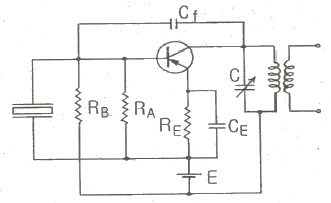
- 피어스 C-B형 발진회로
- 피어스 B-E형 발진회로
- 하틀리 발진회로
- 콜피츠 발진회로
(정답률: 76%)

2. FET의 핀치오프(Pinch-off) 전압이란?
- 드레인 전류가 포화일 때의 드레인-소스간의 전압
- 드레인 전류가 0인 때의 드레인-소스간의 전압
- 드레인 전류가 0인 때의 게이트-드레인간의 전압
- 드레인 전류가 0인 때의 게이트-소스간의 전압
(정답률: 50%)
3. JK 플립플롭을 이용한 비동기식 계수기의 오동작에 대한 설명으로 적합한 것은?
- 오동작과 클록 주파수와는 관련 없다.
- 클록 주파수가 높을수록 오동작 가능성이 크다.
- 클록 주파수가 낮을수록 오동작 가능성이 크다.
- 직렬로 연결된 플립플롭의 수가 많을수록 오동작의 가능성이 적다.
(정답률: 58%)
4. 증폭기에서 바이어스가 적당하지 않으면 일어나는 현상으로 옳지 않은 것은?
- 이득이 낮다.
- 전력 손실이 많다.
- 파형이 일그러진다.
- 주파수 변화 현상이 일어난다.
(정답률: 53%)
5. 열전자 방출 재료의 구비조건으로 옳지 않은 것은?
- 일함수가 적을 것
- 융점이 낮을 것
- 방출효율이 좋을 것
- 가공, 공작이 용이할 것
(정답률: 65%)
6. 트랜지스터와 비교하여 전계효과 트랜지스터(FET)에 관한 설명 중 옳지 않은 것은?
- 다수 캐리어 제어 방식이다.
- 게이트 전압 제어로 드레인 전류를 제어한다.
- 출력 임피던스가 매우 높다.
- 열적으로 안정된 동작을 한다.
(정답률: 53%)
7. 다음과 같은 회로에서 출력 Vo는?
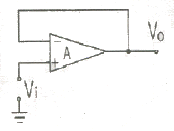
- ∞
- 1
- Vi
- -Vi
(정답률: 55%)
8. 직렬형 정전압 회로의 특징에 대한 설명 중 옳지 않은 것은?
- 과부하시 전류가 제한된다.
- 경부하시 효율이 병렬에 비하여 훨씬 크다.
- 출력 전압의 안정 범위가 비교적 넓게 설계된다.
- 증폭단을 증가시킴으로써 출력저항 및 전압 안정계수를 매우 작게 할 수 있다.
(정답률: 44%)
9. 다음 중 제너 다이오드를 사용하는 회로는?
- 검파회로
- 전압안정회로
- 고주파발진회로
- 고압정류회로
(정답률: 78%)
10. Y 결선의 전원에서 각 상의 전압이 100[V] 일 때 선간 전압은?
- 약 100[V]
- 약 141[V]
- 약 173[V]
- 약 200[V]
(정답률: 52%)
11. 다음 중 집적회로(Integrated Circuit)의 장점이 아닌 것은?
- 신뢰성이 높다.
- 대량 생산할 수 있다.
- 회로를 초소형으로 할 수 있다.
- 주로 고주파 대전력용으로 사용된다.
(정답률: 80%)
12. 이상형 병력 저항형 CR발진회로의 발진주파수는?
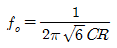
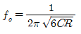
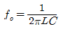
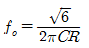
(정답률: 67%)
13. 다음 중 플립플롭 회로와 같은 것은?
- 클리핑회로
- 무안정 멀티바이브레이터회로
- 단안정 멀티바이브레이터회로
- 쌍안정 멀티바이브레이터회로
(정답률: 77%)
14. 100[Ω]의 저항에 10[A]의 전류를 1분간 흐르게 하였을 때의 발열량은?
- 36[kcal]
- 72[kcal]
- 144[kcal]
- 288[kcal]
(정답률: 72%)
15. 고전압 고전류를 얻기 위해서는 다음 중 어느 정류 회로가 좋은가?
- 반파정류기
- 단상 양파정류기
- 브리지정류기
- 배전압 반파정류기
(정답률: 65%)
2과목: 전자계산기일반(대략구분)
16. 다음 중 저주파 발진기로 가장 적합한 것은?
- CR 발진기
- 콜피츠 발진기
- 수정 발진기
- 하틀리 발진기
(정답률: 49%)
17. 2진수 11010.11110를 8진수와 16진수로 올바르게 변환한것은?
- (32.74)8 , (D0.F)16
- (32.74)8 , (1A.F)16
- (62.72)8 , (D0.F)16
- (62.72)8 , (1A.F)16
(정답률: 65%)
18. ADD 명령을 사용하여 1을 덧셈하는 것과 같이 해당 레지스터의 내용에 1을 증가시키는 명령어는?
- DEC
- INC
- MUL
- SUB
(정답률: 56%)
19. 다음 중 C언어의 자료형과 거리가 먼 것은?
- integer
- double
- char
- short
(정답률: 64%)
20. 다음 중 제어장치의 역할이 아닌 것은?
- 명령을 해독한다.
- 두수의 크기를 비교한다.
- 입출력을 제어한다.
- 시스템 전체를 감시 제어한다.
(정답률: 75%)
21. 마이크로프로세서의 구성요소가 아닌 것은?
- 제어 장치
- 연산 장치
- 레지스터
- 분기 버스
(정답률: 70%)
22. 8비트로 부호와 절대값 방법으로 표현된 수 42를 한비트씩 좌우측으로 산술 시프트 하면?
- 좌측 시프트 : 42, 우측 시프트 : 42
- 좌측 시프트 : 84, 우측 시프트 : 42
- 좌측 시프트 : 42, 우측 시프트 : 21
- 좌측 시프트 : 84, 우측 시프트 : 21
(정답률: 69%)
23. 불 대수의 기본 정리 중 틀린 것은?
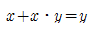
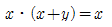
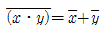
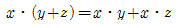
(정답률: 57%)
24. 다음 중 설명이 바르게 된 것은?
- 자심(magnetic core)은 보조기억장치로 사용된다.
- 자기디스크, 자기 테이프는 주기억장치로 사용된다.
- DRAM은 SRAM보다 용량이 크고 속도가 빠르다.
- 누산기는 사칙연산, 논리연산 등의 중간 결과를 기억한다.
(정답률: 58%)
25. 입출력 장치에 대한 설명으로 옳지 않은 것은?
- 대표적인 출력장치로는 프린터, 모니터, 플로터 등이 있다.
- 스캐너는 그림이나 사진, 문서 등을 이미지 형태로 입력하는 장치이다.
- 광학마크판독기(OMR)는 특정한 의미를 지닌 굵고 가는 막대로 이루어진 코드를 판독하는 입력장치이며 판매시점 관리시스템에 주로 사용한다.
- 디지타이저는 종이에 그려져 있는 그림, 차트, 도형, 도면 등을 판 위에 대고 각각의 위치와 정보를 입력하는 장치이며 CAD/CAM 시스템에 사용한다.
(정답률: 66%)
26. 연산에 관계되는 상태와 인터럽트(interrupt) 신호를 기억하는 것은?(오류 신고가 접수된 문제입니다. 반드시 정답과 해설을 확인하시기 바랍니다.)
- 가산기
- 누산기
- 상태 레지스터
- 보수기
(정답률: 60%)
27. 순서도를 사용함으로써 얻을 수 있는 효과가 아닌 것은?
- 프로그램 코딩의 직접적인 자료가 된다.
- 프로그램을 다른 사람에게 쉽게 인수, 인계할 수 있다.
- 프로그램의 내용과 일 처리 순서를 한눈에 파악할 수 있다.
- 오류가 발생했을 때 그 원인을 찾아 수정하기가 어렵다.
(정답률: 79%)
28. ROM에 대한 설명 중 틀린 것은?
- 비휘발성 소자이다.
- 내용을 읽어내는 것만이 가능하다.
- 사용자가 작성한 프로그램이나 데이터를 저장하고 처리 할 수 있다.
- 시스템 프로그램을 저장하기 위해 많이 사용된다.
(정답률: 58%)
29. 다음 중 자기유도 및 상호유도 작용과 밀접한 소자는?
- 코일
- 저항
- 콘덴서
- 다이오드
(정답률: 66%)
30. 다음 중 CAD 시스템의 입력장치가 아닌 것은?
- 포토플로터
- 디지타이저
- 마우스
- 라이트 펜
(정답률: 75%)
3과목: 전자제도(CAD) 이론(대략구분)
31. 한쪽 측면에만 리드(lead)가 있는 패키지 소자는?
- SIP(Single Inline Package)
- DIP(Dual Inline Package)
- SOP(Small Outline Package)
- TQFP(Then Quad Flat Package)
(정답률: 76%)
32. 전자기기의 패널 설계 시 유의하여야 할 사항으로 옳지 않은 것은?
- 전원 코드는 배면에 배치한다.
- 패널 부품은 크기를 고려하여 균형 있게 배치한다.
- 조작상 서로 연관이 있는 요소끼리 배치한다.
- 장치에 외부와 연결되는 접속기가 있을 경우에는 될 수 있는 대로 패널의 배면에 배치한다.
(정답률: 63%)
33. PCB 제작 공정에 사용하기 위한 파일에 속하지 않은 것은?
- DXF 파일
- HPGL 파일
- gerber 파일
- schematic 파일
(정답률: 46%)
34. X-Y 플로터 등에서 처리 속도가 느린 주변기기와 컴퓨터시스템의 중간에서 시스템의 효율을 높일 수 있는 것은?
- 중간 증폭
- 데이터 버퍼
- 마우스
- 연산 장치
(정답률: 74%)
35. 전자부품의 심벌기호 중에 정전압 다이오드(제너다이오드)는?
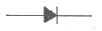
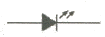
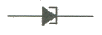
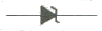
(정답률: 82%)
36. PCB 아트워크 작업에서 포토 플로터를 작동시키는 명령의 사실상의 표준포맷으로, 대부분의 인쇄 기판 CAD의 최종 목적으로 출력하는 파일은?
- 필름 형식( film format)
- 배선 형식(router format)
- 거버 형식(gerber format)
- 레이어 형식(layer format)
(정답률: 80%)
37. 핀의 배열이 두 줄로 평행하게 배열되어 있는 부품을 지칭하는 용어로 우수한 열 특성을 갖고 있는 IC 외형은?
- SMD
- SIP
- DIP
- PLCC
(정답률: 62%)
38. artwork 필름을 제작할 때, PCB 제조 공정에서의 치수 변화를 보정하는 작업을 무엇이라 하는가?
- repairing
- plotting
- scaling
- modifying
(정답률: 58%)
39. 제도 용지에 연필로 직접 그린 그림이나 컴퓨터로 작성한 최초의 도면은?
- 원도
- 트레이스도
- 복사도
- 축로도
(정답률: 83%)
40. 제도의 목적을 달성하기 위한 도면의 요건으로 옳지 않은 것은?
- 대상물의 도형과 함께 필요로 하는 크기, 모양, 자세, 위치의 정보를 포함하여야 한다.
- 도면의 정보를 명확하게 하기 위하여 복잡하고 어렵게 표현하여야 한다.
- 가능한 한 넓은 기술 분야에 걸쳐 정합성, 보편성을 가져야 한다.
- 복사 및 도면의 보존, 검색, 이용이 확실히 되도록 내용과 양식을 구비하여야 한다.
(정답률: 81%)
41. 전자기기의 패널을 설계 제도할 때 유의해야 할 사항으로 옳은 것은?
- 전원 코드는 배면에 배치한다.
- 패널 부품은 크기를 고려하지 않고 배치한다.
- 조작 빈도가 낮은 부품은 패널의 중앙이나 오른쪽에 배치한다.
- 장치의 외부와 연결되는 접속기가 있을 경우 가능한 패널의 위에 배치한다.
(정답률: 58%)
42. 한국산업표준(KS)에 의한 부분별 기호의 대분류 중 전기부문의 분류 기호는?
- KSA
- KSB
- KSC
- KSD
(정답률: 81%)
43. 표제란 축척이 1/2로 되어 있을 때, 실제 물체의 길이가 50[mm]인 경우 도면에 표시되는 길이는?
- 5[mm]
- 25[mm]
- 50[mm]
- 100[mm]
(정답률: 64%)
44. CAD 소프트웨어의 실행 화면에서 커서의 좌표 위치나 사용 중인 도면 층의 이름 등 각종 정보가 표시되는 부분은?
- 상태줄
- 명령 영역
- 그리기 영역
- 도구 아이콘
(정답률: 72%)
45. 도면의 종류 중 사용목적에 따른 분류에 해당하지 않는 것은?
- 계획도
- 제작도
- 견적도
- 조립도
(정답률: 60%)
46. PCB 설계의 입력 데이터로 사용되는 필수 파일로 패키지 명, 부품 명, 네트 명, 네트와 연결된 부품 핀, 네트와 핀, 부품 속성 등에 대한 정보를 갖고 있는 파일로 옳은 것은?
- 보고서(Report) 파일
- 네트리스트(Netlist) 파일
- 거버(Gerber) 파일
- 데이터 변환(DXF) 파일
(정답률: 75%)
47. 인쇄회로기판(PCB)을 사용하여 전자기기를 제작하였을 때 얻어지는 일반적인 특징 설명 중 옳지 않은 것은?
- 오배선의 우려가 많다.
- 대량 생산의 효과가 높다.
- 회로의 특성이 안정화된다.
- 제품의 균일성과 신뢰성이 높다.
(정답률: 80%)
48. 인쇄회로기판(PCB)의 제작시 사용하는 동박의 두께는 일반적으로 어느 것을 가장 많이 사용하는가?
- 0.8 ~ 1.2[mm]
- 35 ~ 104[μm]
- 104 ~ 207[μm]
- 0.01 ~ 0.1[mm]
(정답률: 46%)
49. 레이저 빔 프린터와 같은 고속 프린터의 속도를 표시할 때 사용하는 단위는?
- CPS
- LPM
- PPM
- BPS
(정답률: 62%)
50. 다음 중 데이터 저장장치에 속하지 않는 것은?
- FDD
- HDD
- CRT
- CD-RW
(정답률: 66%)
51. 모니터의 신호 방식에 따른 분류에 속하지 않는 것은?
- 아날로그(analog) 방식
- 디지털(digital) 방식
- 멀티싱크(multi sync) 방식
- 오프라인(off-line) 방식
(정답률: 67%)
52. 다음 기호의 명칭은?
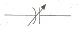
- 가변 저항기
- 가변 콘덴서
- 고정 저항
- 스위치
(정답률: 74%)
53. 부품 배치도의 작성 방법에 대한 설명으로 옳지 않은 것은?
- 균형 있게 배치한다.
- IC의 경우 1번 핀을 표시한다.
- 부품 상호간의 신호가 유도되도록 한다.
- 조정이 필요한 부품은 조작이 용이하도록 배치하여야 한다.
(정답률: 69%)
54. 전자 CAD에서 부품을 복사, 붙여 넣거나 편집하는 기능이 있는 메뉴는?
- File 메뉴
- Edit 메뉴
- Help 메뉴
- Option 메뉴
(정답률: 73%)
55. 다음 중 CAD의 특징으로 볼 수 없는 것은?
- 작성된 도면의 정보를 기계에 직접 적용시킬 수 있다.
- 직선과 곡선의 처리, 도형과 그림의 이동, 회전 등이 자유롭다.
- 3차원 도형을 임의의 방향으로 표현할 수 있고, 숨은 선의 처리가 용이하다.
- 자주 쓰는 도형, 부품 등을 매크로에 정의하여 쓸 수 있으나, 하나의 도면을 다시 재생할 수는 없다.
(정답률: 70%)
56. 회로도 작성 시 고려할 사항으로 옳지 않은 것은?
- 신호의 흐름은 도면의 왼쪽에서 오른쪽으로, 위에서 아래로 그린다.
- 주회로와 보조회로가 있는 경우에는 주 회로를 중심으로 그린다.
- 대각선과 곡선은 최단거리 기준으로 자주 사용하여야 한다.
- 선과 선이 전기적으로 접속되는 곳에는 “ㆍ”표시를 한다.
(정답률: 72%)
57. 다음 중 설계자의 의도를 작업자에게 전달시켜 요구하는 물품을 정확하게 만들기 위해 사용되는 도면은?
- 공정도
- 설명도
- 승인도
- 제작도
(정답률: 70%)
58. 다음 그림의 논리 게이트 명칭은?
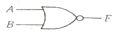
- AND gate
- OR gate
- NAND gate
- NOR gate
(정답률: 79%)
59. 마일러 콘덴서에는 용량치가 숫자로 쓰여 있다. 104K 는 얼마인가?
- 0.01[μF], ±10%
- 0.1[μF], ±10%
- 1[μF], ±10%
- 10[μF], ±10%
(정답률: 66%)
60. 「컴퓨터 지원 설계」의 약자로 옳은 것은?
- CAD
- CAM
- CAE
- CNC
(정답률: 81%)